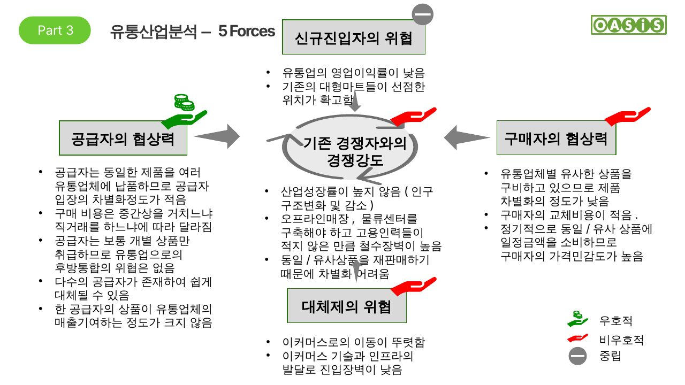

유통산업 분석 – 5 Forces
오아시스는 신선식품에 집중하지만, 확장성을 고려해 유통산업 전체로 묶어 분석했습니다.
결론: 시장에서 유통산업의 매력도는 크지 않습니다. 공급자 측면은 오아시스에 우호적이지만, 구매자 교체비용과 경쟁강도는 비우호적입니다.
요인별 분석
공급자의 협상력 우호적
- 동일 제품을 여러 유통업체에 납품하므로 공급자의 차별화 정도가 낮음
- 다수의 공급자가 존재해 쉽게 대체 가능
- 한 공급자의 상품이 유통업체 매출에 기여하는 정도가 크지 않음
- 공급자는 개별 상품만 취급해 유통업으로의 후방통합 위협이 없음
구매자의 협상력 비우호적
- 유통업체별 유사한 상품을 갖추고 있어 제품 차별화가 낮음
- 구매자의 교체비용이 적음
- 정기적으로 동일·유사 상품에 일정 금액을 쓰므로 가격 민감도가 높음
신규진입자의 위협 중립
- 이커머스로의 이동이 뚜렷하고, 이커머스 기술·인프라 발달로 진입장벽이 낮음
- 유통업의 영업이익률이 낮고, 대형마트가 확고한 입지를 선점
대체제의 위협 비우호적
- 오프라인 시장이 메인이었으나 팬데믹을 거치며 온라인으로 이동
- 이커머스 전환 추세로 대체제의 위협이 강해지는 중
기존 경쟁자와의 경쟁강도 비우호적
- 출생률 저하로 인구가 감소해 산업 성장률이 높지 않음
- 오프라인 매장·물류센터 구축이 필요하고 고용 인력이 많아 철수 장벽이 높음
- 판매 상품이 기업 간 유사해져 차별화가 어려움

원본 슬라이드 5 · 유통산업 분석 – 5 Forces